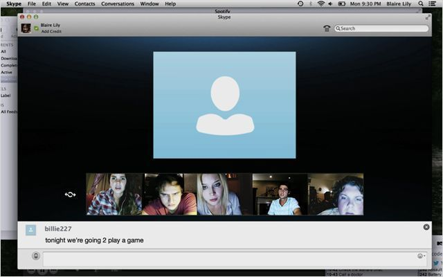
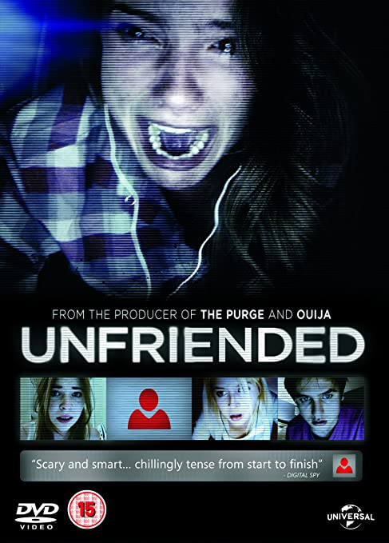

Galerie

Pour en savoir plus sur les films, appuyez sur les affiches
Unfriended est un film d’horreur américain. Le film débute par une scène montrant une jeune fille (Laura Barns) ivre lors d’une soirée sous la forme d’une vidéo disponible sur internet. À cause de cela et du harcèlement qu’elle a subi auparavant, Laura s’est suicidée (cette scène est également filmé au début du film). Le film commence par une simple conversation Skype entre deux personnages, puis tout à coup une discussion de groupe commence. Des amis ont rejoint la discussion des deux personnages (qui étaient en toute intimité), mais également un inconnu est apparu. Il ne parlait pas, n’écrivait pas, ne montrait pas son visage … et c’est à partir de là que les problèmes vont commencer…
Extrait du film Unfriended
Ce film a été réalisé par Levan Gabriadze, aux Etats-Unis. Il est sorti en 2015. Le réalisateur a voulu mettre l’accent sur un thème du scénario qu’il apprécie beaucoup : l’intimidation. Il pense que les innovations techniques et technologiques de communication, qui sont mises en avant dans le film (tout se déroule sur une conversation vidéo, avec le logiciel Skype), poussent davantage les intimidateurs à pratiquer leurs méfaits.
Affiche du film
Le nom du film a été modifié 3 fois : au développement nous avions le titre Offline, ensuite les producteurs sont allés vers Cybernatural, et finalement le titre sera changé pour Unfriended.
En ce qui concerne le tournage, il a eu lieu à Santa Clarita en Californie et à duré seulement 16 jours. Il s’est déroulé dans une seule maison et les acteurs étaient chacun placés dans une pièce différente.
Pour ce qui est du Box-office, au niveau nord-américain, les entrées ont dépassé les 30 millions d’entrées. Tandis qu’en Europe, et plus précisément en France, les entrées sont allées jusqu’à 283 000. Au niveau mondial on note un total d’environ 63 millions d’entrées.
Ce film a été récompensé lors du FanTasia 2014 avec le prix du film le plus innovant et mention spéciale.
Vous vous demandez peut-être si le film a une suite… et bien la réponse est oui car dès avril 2015 une suite a été annoncée. Cette dernière se nomme Unfriended : Dark Web sortie en 2018 qui, de la même façon qu’Unfriended, la majeure partie du film se déroulera lors d’une visioconférence.
Si vous avez visionné le film on peut apercevoir dans l’historique de Blaire Lily (jouée par Shelley Henning), un lien menant vers la série Teen Wolf, dans laquelle l’actrice joue.